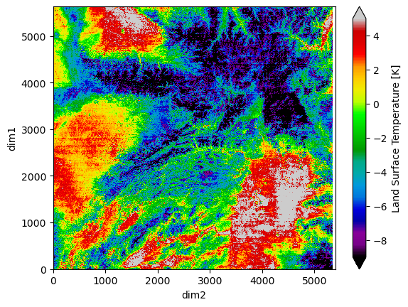

Access Land Surface Temperature Data From ECOSTRESS#

The ECOsystem Spaceborne Thermal Radiometer Experiment on Space Station (ECOSTRESS) mission measures the temperature of plants to better understand how much water plants need and how they respond to stress. ECOSTRESS is attached to the International Space Station (ISS) and collects data globally between 52° N and 52° S latitudes. Source: NASA Earthdata.
Requirements#
EDL authentication (username/password)
Objectives#
Subset a remote file#
a) By Variables
b) By Spatial selection
Subset multiple remote files#
Stream subset of data
References#
Hook, S., & Hulley, G.(2022). ECOSTRESS Swath Land Surface Temperature and Emissivity Instantaneous L2 Global 70 m v002 [Data set]. NASA Land Processes Distributed Active Archive Center. https://doi.org/10.5067/ECOSTRESS/ECO_L2_LSTE.002
import xarray as xr
import datetime as dt
import earthaccess
import pydap
import matplotlib.pyplot as plt
# import pydap-specific tools
from pydap.client import get_cmr_urls, open_url
import numpy as np
from pydap.client import to_netcdf as dap_to_netcdf
EDL Authentication via earthaccess and OPeNDAP#
You can authenticate via earthaccess as demonstrated below. You must have a valid EDL account. There are two strategies for authenticating with earthaccess:
strategy="interactive". This will promt your edl username-password.strategy="netrc". Use this if the notebook is running on an environment where a.netrcwith your credentials is recoverable. T
Below the default will be netrc, assuming the user has executed the notebook Authenticate.ipynb. If not, you can change the strategy to "interactive".
from earthaccess.exceptions import LoginStrategyUnavailable
try:
auth = earthaccess.login(strategy="netrc", persist=True) # you will be promted to add your EDL credentials
except LoginStrategyUnavailable:
auth = earthaccess.login(strategy="interactive", persist=True)
# pass Token Authorization to a new Session.
my_session = session=auth.get_session()
Finding OPeNDAP URLs#
Query opendap urls using NASA’s CMR API
We query NASA’s CMR to identify remote files that intersect the following geographical area (bounding box) covering the following time range
-128.85 < longitude < -107.05, and 41.1 < latitude < 46.68
03/01 - 04/30 (2025)
ECOSTRESS_ccid = "C2076114664-LPCLOUD"
bounding_box = [-128.847656, 41.112469, -107.050781, 46.679594]
time_range = [dt.datetime(2025, 3, 1), dt.datetime(2025, 3, 30)]
cmr_urls = get_cmr_urls(ccid=ECOSTRESS_ccid, bounding_box = bounding_box, limit=1000, time_range=time_range) # limit by default = 50
print("################################################ \n We found a total of ", len(cmr_urls), "OPeNDAP URLS!!!\n################################################")
################################################
We found a total of 188 OPeNDAP URLS!!!
################################################
Accessing Metadata-ONLY with PyDAP#
We can access OPeNDAP-produced metadata to identify the variables of interest. In particular those associated with latitude and longitude values
Below need to request the DAP4 metadata from the remote server.
%%time
pyds = open_url(cmr_urls[0], protocol="dap4", session=my_session)
pyds.tree()
.ECOv002_L2_LSTE_37709_001_20250301T092419_0713_01.h5
├──L2 LSTE Metadata
│ ├──AncillaryNWP
│ ├──BandSpecification
│ ├──CloudMaxTemperature
│ ├──CloudMeanTemperature
│ ├──CloudMinTemperature
│ ├──CloudSDevTemperature
│ ├──Emis1GoodAvg
│ ├──Emis2GoodAvg
│ ├──Emis3GoodAvg
│ ├──Emis4GoodAvg
│ ├──Emis5GoodAvg
│ ├──LSTGoodAvg
│ ├──NWPSource
│ ├──NumberOfBands
│ ├──OrbitCorrectionPerformed
│ ├──QAPercentCloudCover
│ └──QAPercentGoodQuality
├──SDS
│ ├──Emis1
│ ├──Emis1_err
│ ├──Emis2
│ ├──Emis2_err
│ ├──Emis3
│ ├──Emis3_err
│ ├──Emis4
│ ├──Emis4_err
│ ├──Emis5
│ ├──Emis5_err
│ ├──EmisWB
│ ├──LST
│ ├──LST_err
│ ├──PWV
│ ├──QC
│ ├──cloud_mask
│ └──water_mask
└──StandardMetadata
├──AncillaryInputPointer
├──AutomaticQualityFlag
├──AutomaticQualityFlagExplanation
├──BuildID
├──CampaignShortName
├──CollectionLabel
├──DataFormatType
├──DayNightFlag
├──EastBoundingCoordinate
├──FieldOfViewObstruction
├──HDFVersionID
├──ImageLineSpacing
├──ImageLines
├──ImagePixelSpacing
├──ImagePixels
├──InputPointer
├──InstrumentShortName
├──LocalGranuleID
├──LongName
├──NorthBoundingCoordinate
├──PGEName
├──PGEVersion
├──PlatformLongName
├──PlatformShortName
├──PlatformType
├──ProcessingEnvironment
├──ProcessingLevelDescription
├──ProcessingLevelID
├──ProducerAgency
├──ProducerInstitution
├──ProductionDateTime
├──ProductionLocation
├──RangeBeginningDate
├──RangeBeginningTime
├──RangeEndingDate
├──RangeEndingTime
├──RegionID
├──SISName
├──SISVersion
├──SceneID
├──ShortName
├──SouthBoundingCoordinate
├──StartOrbitNumber
├──StopOrbitNumber
└──WestBoundingCoordinate
CPU times: user 55.7 ms, sys: 2.74 ms, total: 58.4 ms
Wall time: 281 ms
Subset data#
First, we would like to subset data based on the criteria:
Daylight data
QAPercentCloudCover <30%
and QAPercentGoodQuality> 70%
For that, we need to download only 3 variables:
["/L2 LSTE Metadata/QAPercentCloudCover",
"/L2 LSTE Metadata/QAPercentGoodQuality",
"/StandardMetadata/DayNightFlag"]
output_path = 'data/'
Stream data into local directory#
Stream each remote file into an individual file, since these cannot be aggregated.
%%time
dap_to_netcdf(cmr_urls, session=my_session, output_path = output_path,
keep_variables=["/L2 LSTE Metadata/QAPercentCloudCover",
"/L2 LSTE Metadata/QAPercentGoodQuality",
"/StandardMetadata/DayNightFlag"]
)
CPU times: user 192 ms, sys: 270 ms, total: 462 ms
Wall time: 17.7 s
Inspect all downloaded files#
Data has been already downloaded, and we can further filter to identify remote granules by
Daylight data
QAPercentCloudCover <30%
and QAPercentGoodQuality> 70%
Then we will update our list of URLs to download from, based on the remote files that satisfy the above criteria
NOTE: The files cannot be aggregated!!
final_urls = []
for i in range(len(cmr_urls)):
local_file = output_path+cmr_urls[i].split("/")[-1]+".nc4"
dst = xr.open_datatree(local_file).load()
if dst['L2 LSTE Metadata/QAPercentCloudCover'].values < 30 and dst["L2 LSTE Metadata/QAPercentGoodQuality"] > 70 and dst["/StandardMetadata/DayNightFlag"] == 'Day':
final_urls.append(cmr_urls[i])
print("Total remote granules to download: ", len(final_urls))
Total remote granules to download: 15
Declare final variables to download#
At this point, it is crucial to remove any ECOSTRESS data downloaded into the data_output directory. For that open a terminal and navigate to the data directory
import os
import glob
fnames = [output_path+f"{fname.split('/')[-1]}.nc4" for fname in cmr_urls]
for filename in fnames:
try:
os.remove(filename)
except FileNotFoundError:
print(f"The file '{filename}' is not in there anymore")
# define all variables of interest that our final download will have
keep_vars = ["/StandardMetadata/EastBoundingCoordinate",
"/StandardMetadata/SouthBoundingCoordinate",
"/StandardMetadata/NorthBoundingCoordinate",
"/StandardMetadata/WestBoundingCoordinate",
"/StandardMetadata/DayNightFlag",
"/StandardMetadata/ImagePixels",
"/StandardMetadata/ImagePixelSpacing",
"/StandardMetadata/ImageLines",
"/StandardMetadata/RangeBeginningDate",
"/StandardMetadata/RangeBeginningTime",
"/StandardMetadata/RangeEndingDate",
"/L2 LSTE Metadata/QAPercentCloudCover",
"/L2 LSTE Metadata/QAPercentGoodQuality",
"/SDS/QC", "/SDS/LST",
]
Data Download#
Do not forget to now use the final_urls list, which points to our granules of interest.
%%time
dap_to_netcdf(final_urls, session=my_session, output_path = output_path,
keep_variables=keep_vars,
)
CPU times: user 35.7 ms, sys: 119 ms, total: 155 ms
Wall time: 16.1 s
Inspect local files#
Data has been already downloaded!
NOTE: These datasets cannot be aggregated
local_file = output_path+final_urls[0].split("/")[-1]+".nc4"
dst = xr.open_datatree(local_file)
dst
<xarray.DataTree>
Group: /
├── Group: /L2 LSTE Metadata
│ Dimensions: (dim0: 1)
│ Dimensions without coordinates: dim0
│ Data variables:
│ QAPercentCloudCover (dim0) int32 4B ...
│ QAPercentGoodQuality (dim0) int32 4B ...
├── Group: /SDS
│ Dimensions: (dim1: 5632, dim2: 5400)
│ Dimensions without coordinates: dim1, dim2
│ Data variables:
│ LST (dim1, dim2) float64 243MB ...
│ QC (dim1, dim2) uint16 61MB ...
└── Group: /StandardMetadata
Dimensions: (dim3: 1)
Dimensions without coordinates: dim3
Data variables:
DayNightFlag <U3 12B ...
EastBoundingCoordinate (dim3) float64 8B ...
ImageLines (dim3) int32 4B ...
ImagePixelSpacing (dim3) float64 8B ...
ImagePixels (dim3) int32 4B ...
NorthBoundingCoordinate (dim3) float64 8B ...
RangeBeginningDate <U10 40B ...
RangeBeginningTime <U15 60B ...
RangeEndingDate <U10 40B ...
SouthBoundingCoordinate (dim3) float64 8B ...
WestBoundingCoordinate (dim3) float64 8B ...(dst["SDS/LST"]-273.15).plot(vmin=-9, vmax=5, cmap='nipy_spectral')
<matplotlib.collections.QuadMesh at 0x149715110>
